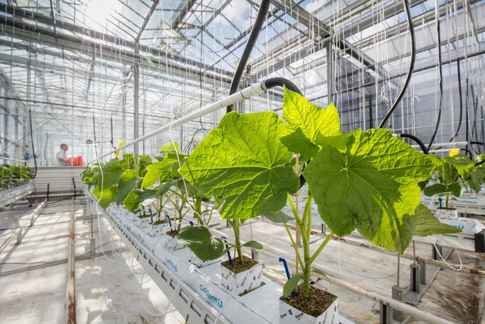

Inteligências Artificiais Generativas
As Inteligências Artificiais generativas são sistemas de IA capazes de criar conteúdos, como imagens, músicas e textos, de forma autônoma.
Na agricultura, essas tecnologias podem ser utilizadas para otimizar processos de produção, prever safras, monitorar o crescimento das plantas e até mesmo desenvolver novas variedades de cultivos.
Exemplos de aplicação incluem o uso de redes neurais para identificar doenças em plantas e algoritmos genéticos para melhorar características agronômicas.
